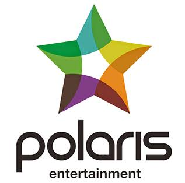

B
About 71% of evidence is audited or independently disclosed, but the new strategy remains largely undisclosed.
SGX: 9VW · Film & Media · Research exhibit 13
A listed shell waiting for its next act.
The former Spackman Entertainment now holds little operating scale. Most of the reported equity sits in one associate while a new Korean controlling group has yet to disclose a funded plan.

The score
The 14.2 score reflects minimal revenue, repeated cash burn, extreme associate concentration and an incomplete leadership transition. The surviving balance-sheet value is real but not yet equivalent to a viable business.
US$8.17m of equity at Jun 2026, dominated by a 43.88% stake in Spackman Media Group, plus optionality around a new controlling shareholder.
An active CEO, a disclosed funding runway, a repeatable revenue engine and a clear transaction plan for the Korean media assets.
About 71% of evidence is audited or independently disclosed, but the new strategy remains largely undisclosed.
Asset write-downs, funding terms and the credibility of an injection can move the score materially.
Spackman Entertainment became Polaris E&M; the name changed faster than the operating evidence.
Exhibit · The operating model
Film production has contracted to near zero. The remaining case is a concentrated associate holding, a small consulting line and the possibility that the new owner introduces another Korean entertainment platform.
43.88% associate stake and the overwhelming majority of net asset value.
91% of Jun 2026 equityThe only reported 1H2026 revenue; too small to support a listed-company cost base.
1H2026 revenueFY2025 revenue attached to a release that generated a gross loss.
No repeatable slate visibleYou Are the Apple of My Eye drew about 165,000 admissions, or roughly 0.16% of Korean admissions, and did not establish a viable release engine.
Revenue fell from US$14.93m in FY2021 to US$0.08m over the last twelve months.
The listed company is effectively a concentrated holding vehicle at present.
Potential value exists, but no funded operating blueprint is yet disclosed.
Evidence · Financials
The apparent 1H2026 profit was driven by non-operating items, not a recovered business. Cash flow gives the cleaner reading.
The business did not merely cycle down. Its operating scale changed category.
| Period | Revenue | Gross profit | Net profit / loss | Equity | Operating cash flow |
|---|---|---|---|---|---|
| FY2021 | 14.93 | 1.98 | 1.72 | 33.0 | -0.65 |
| FY2022 | 3.40 | 1.30 | -6.71 | 26.2 | -5.15 |
| FY2023 | 0.08 | -0.15 | -8.05 | 17.7 | -5.47 |
| FY2024 | 0.19 | 0.04 | -0.02 | 20.5 | -2.28 |
| FY2025 | 1.22 | -1.45 | -15.37 | 5.4 | -0.97 |
| 1H2026 | 0.07 | 0.07 | 3.20 | 8.2 | -0.67 |
Evidence · Balance sheet
The distinction between accounting equity and liquid funding is decisive. A modest asset impairment could materially change the solvency picture.
Net debt including film obligations was about US$1.44m. The issue is immediate liquidity, not just headline book value.
Decision · Valuation
The low multiple is visually striking but not self-validating. Investors need to bridge from the associate carrying value to distributable cash and then account for future dilution.
This is a sensitivity, not a forecast. It shows why valuation cannot be separated from evidence quality.
Evidence · Demand
A media company normally converts IP, talent or production capability into a slate and contracted distribution. Polaris currently discloses neither a recurring slate nor a meaningful contracted pipeline.
No detailed operating blueprint from the new controlling group.
No disclosed 12-month cash plan for the listed company.
No quantified film, talent or consulting order book.
No revenue base on which to model sustainable margins.
Demand analysis should begin only after Polaris identifies the assets, management team, funding and commercial channel it intends to operate.
Framework · Market position
The historical network and associate could matter, but current disclosures do not show proprietary content, contracted talent economics or a scaled distribution advantage inside the listed entity.
No active, repeatable film pipeline is disclosed.
Exposure sits mainly through a 43.88% associate stake.
No current channel economics or contracted output deal is disclosed.
Asset value is concentrated while liquid cash is minimal.
The Polaris group may introduce assets, but terms and timing are unknown.
The Polaris group stake is split across five companies rather than concentrated in one operating parent.
The chief executive role has been vacant since April 2026.
The new name signals intent, but not yet the economics of a new operating model.
Decision · Risk matrix
Select a risk to inspect the trigger and mitigation. Position reflects report-date likelihood and impact.
Decision · Strategy and outlook
A new brand is not a strategy. The sequence below separates survival, governance, transaction clarity and asset allocation.
Secure enough liquidity to remove immediate going-concern pressure.
Put an accountable operator in charge of the transition.
Disclose the asset, valuation, financing and dilution terms.
Integrate, monetise or transparently retain the concentrated stake.
FY2027 scenario model
The shell is funded and reorganised, but the new business remains early.
Polaris E&M may contain transaction optionality, but the report-date evidence supports a fragile score. Investors are being asked to value a future plan before management, funding and the operating asset have been fully identified.
Sources and update history
Update history: 31 Oct 2026 — initial full analysis published; FY2025 and 1H2026 evidence incorporated.
Research standard
Reported figures are reproduced from company materials. Ratios, sensitivities, scenarios and the score are Beyond Our Gallery calculations. Scenario values are assumptions, not forecasts. Undisclosed values are not treated as zero.
This independent editorial research is not investment advice, a recommendation or an offer to transact. The author has not been paid by the covered company.